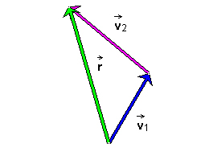

1 and 2, and their resultant
1 and 2, and their resultant  constructed by the Tip-to-Tail Method.
constructed by the Tip-to-Tail Method.
The following Figure 1 shows the two vectors 1 and 2, and their resultant constructed by the Tip-to-Tail Method.

Figure 1
Once more, the numerical specifications of the two vectors are as follows:
1 =
(v, q)1 = (100,
60o) ,
1 =
(v, q)1 = (130,
140o) .
To calculate the magnitude and direction of the resultant displayed in Figure 1, we need to
first of all draw a diagram showing all relevant quantities. To
the diagram that you drew earlier, which should be similar to that
in Figure 1, add the given angles and the angle that we need to
calculate. When done, go to Page 3 to compare.